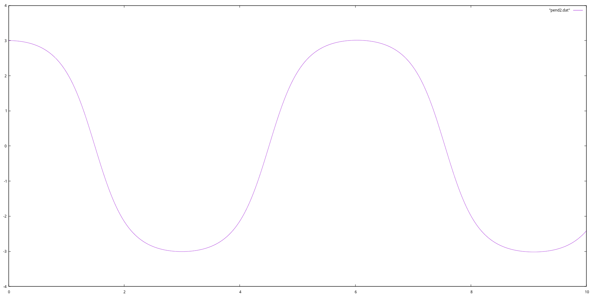

6.4. Numerical Solution of the Pendulum Problem#
We can solve the differential equation numerically, without resorting to the \(\sin\theta \approx \theta\) approximation using the Euler method to rewrite the sytem as a first-order differential equation:
\[\begin{align*}
\dot{\phi} &= u \quad &&u(0) = u_{0} \\
\dot{u} &= -\frac{g}{f}\sin{\phi} \quad
&&\phi(0) = \phi_{0}
\end{align*}\]
With the time step \(\Delta t\) we can express this differential equation as:
\[\begin{align*}
\phi_{n+1} &= \phi_{n} + \Delta t u_{n} \\
u_{n+1} &= u_{n} - \Delta t(\frac{g}{l}\sin{\phi_{n}}) \\
\end{align*}\]
Coding this difference scheme as a C++ we obtain:
#include <iostream>
#include <cmath>
double l(1.34);
double phi(3.0); //note that the initial phi can be large
double u(0.0);
double dt(1E-4);
double T(0.003);
double t(0.0);
while (t < T){
std::cout << t << " " << phi << std::endl;
double phiprev(phi);
phi += dt * u;
u -= dt * (9.81 / l) * sin(phiprev);
t += dt;
}
Show code cell output
0 3
0.0001 3
0.0002 3
0.0003 3
0.0004 3
0.0005 3
0.0006 3
0.0007 3
0.0008 3
0.0009 3
0.001 3
0.0011 3
0.0012 3
0.0013 3
0.0014 3
0.0015 3
0.0016 3
0.0017 3
0.0018 3
0.0019 3
0.002 3
0.0021 3
0.0022 3
0.0023 3
0.0024 3
0.0025 3
0.0026 3
0.0027 3
0.0028 3
0.0029 3
0.003 3
Full program text with T initialized with 10 instead of small value as above:
#include <iostream>
#include <cmath>
double l(1.34);
double phi(3.0); //note that the initial phi can be large
double u(0.0);
double dt(1E-4);
double T(10);
double t(0.0);
int main()
{
while (t < T){
std::cout << t << " " << phi << std::endl;
double phiprev(phi);
phi += dt * u;
u -= dt * (9.81 / l) * sin(phiprev);
t += dt;
}
}
we obtain following plot by plotting the data produced by this program:
